Cenk Oto Milas
Motrio Servis ve Hasar Merkezi
Renault Group · Dacia · Motrio
Renault ve Dacia araçlar için Motrio standartlarında profesyonel servis hizmetleri sunarken, tüm marka araçlara yönelik hasar onarım, sigorta süreç yönetimi ve garanti avantajlarıyla kapsamlı çözümler sağlıyoruz.
Hasar Onarım
Tüm marka araçlar için profesyonel onarım hizmeti
Motrio Servis
Renault & Dacia araçlara özel Motrio servis hizmetleri
Sigorta Süreç Yönetimi
Sigorta dosya takibi ve süreç yönetimi desteği
Nasıl Yardımcı Olabiliriz?
Servis ve hasar işlemleri için ilgili birime doğrudan ulaşabilirsiniz.
Servis
Renault ve Dacia araçlar için Motrio standartlarında periyodik bakım, arıza tespiti, motor, fren, klima ve yedek parça hizmetleri.
motrio.cenkoto@motrio.com.tr0555 546 09 77
Hasar
Marka fark etmeksizin tüm araçlar için hasar onarım, kaporta, sigorta dosya süreçleri ve anlaşmalı garanti avantajlarıyla profesyonel destek.
cenk.oto@hotmail.com0555 886 53 01
20+
Yıl Tecrübe
1000+
Mutlu Müşteri
5000+
Servis İşlemi
Milas Motrio Servis ve Hasar Onarım
Cenk Oto Motrio olarak Milas’ta Renault ve Dacia araçlara servis hizmeti, tüm marka araçlara ise hasar onarım, sigorta süreci desteği ve garanti avantajı sunuyoruz.
Hizmetlerimiz
Periyodik Bakım
Renault ve Dacia araçlar için yağ, filtre, sıvı kontrolü ve düzenli bakım işlemleri.
Arıza Tespiti
Modern cihazlarla hızlı arıza teşhisi ve profesyonel servis yönlendirmesi.
Motor Hizmetleri
Motor bakım, kontrol ve onarım süreçlerinde uzman servis çözümleri.
Klima Bakımı
Araç kliması gaz dolumu, sistem kontrolü ve bakım işlemleri.
Fren Sistemleri
Güvenli sürüş için fren balata, disk ve sistem kontrolleri.
Tüm Marka Hasar Onarım
Sigortalı veya bireysel tüm müşteriler için kaporta, hasar ve onarım süreci desteği.
Galeri
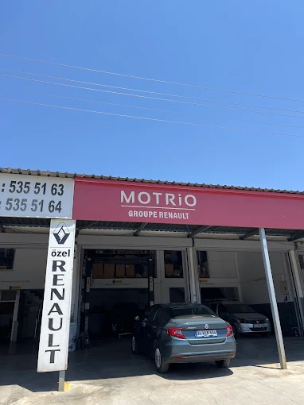
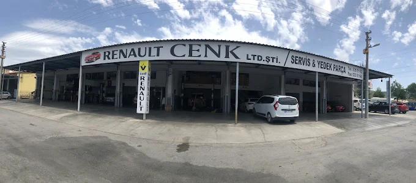
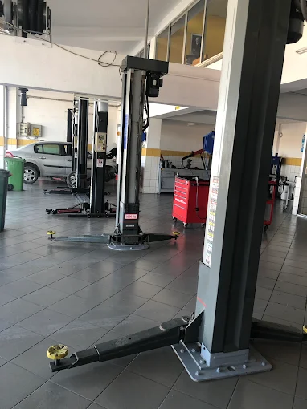
Anlaşmalı Sigorta Şirketleri
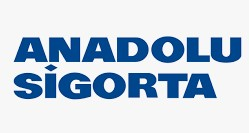
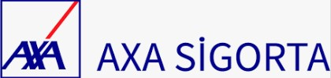
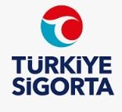
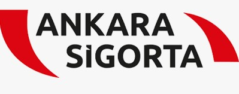
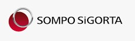
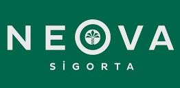
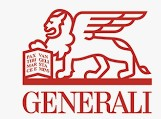
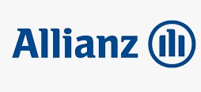
Referanslarımız
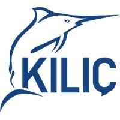
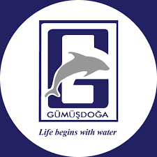
Google Değerlendirmeleri
Konumumuz
İletişim
Milas Küçük Sanayi Sitesi 5.km B25/26
Milas / Muğla